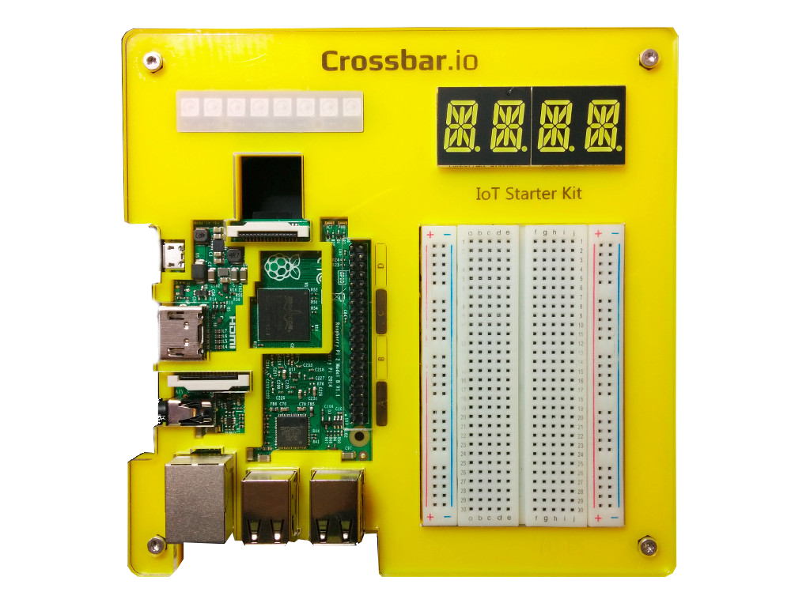

Colorama

This demo uses both RPC and PubSub, including a wildcard subscription.
Starterkit SN1307984267
Starterkit SN3711643271
The RGB color LED strips on two Crossbar.io IoT Starterkits (with serials SN1307984267 and SN3711643271) can be controlled in real-time using above color pickers. The LED strips expose procedure which are called remotely from this color picker UI.